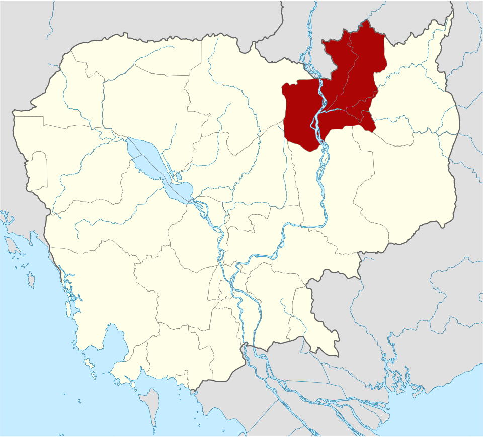
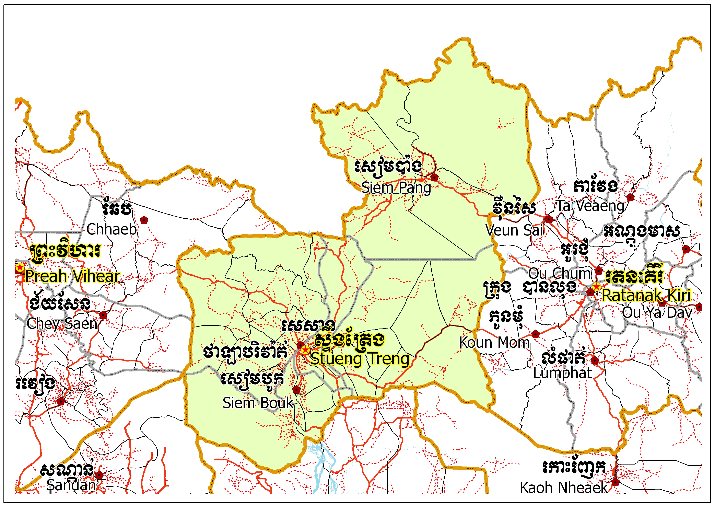
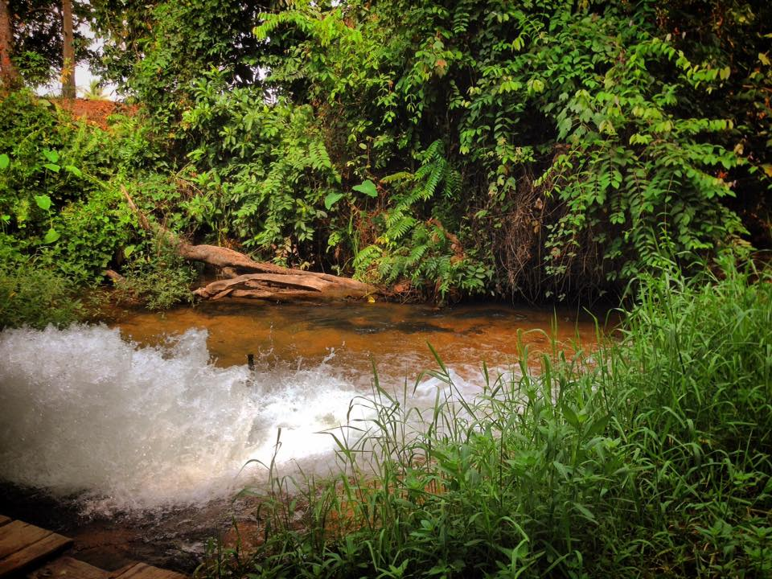

ខេត្តស្ទឹងត្រែង
ខេត្តស្ទឹងត្រែង គឺជាខេត្តមួយនៅចុងខាងជើងនៃប្រទេសកម្ពុជា។ ឈ្មោះដើមហៅថា សុវណ៌្ណបុរ នៃដែនដីសុវណ៌្ណភូមិ កម្វុជទេឝ (ប្រាសាទបុរាណខ្មែរសាងច្រើនពីឥដ្ឋលាយថ្មភក់ ក្នុងសម័យហ្វូណន និងដើមសម័យចេនឡា) និងអាចតាមអ្នកស្រុកថា ឆ្ទិងតេង តាមភាសាសំស្ក្រឹត (ភាសាលាវថា សៀងតេង) ដែលមានព្រះសិវលិង្គរកឃើញចំនួន២គឺ វ្រះ ឝិវលិង្គ សុវណ៌្ណេឝ្វរ និងវ្រះឝិវលិង្គ សុវណ៌្ណលិង្គ និងមានទន្លេមេគង្គត្រូវហៅឈ្មោះដើមថា ទន្លេកម្វុជ / កម្ពុជា ហៅតាមសំស្ក្រឹតថា មហាតីថ៌ ហើយក្រុងស្ទឹងត្រែងត្រូវប្រសព្វទន្លេជាច្រើនខ្សែហៅថា តីថ៌ (តីថ៌ ត្រូវចាត់ជាទន្លេលាងបាប និងមានមន្តសិរីជ័យមង្គលដល់អ្នកស្រុក)។ ទីក្រុងរបស់ខេត្តស្ទឹងត្រែងមានឈ្មោះថា ទីក្រុងស្ទឹងត្រែង។ ខេត្តមួយនៃប្រទេសកម្ពុជានៅភាគឦសាន។ ដែលមានព្រំប្រទល់ជាប់ខេត្តរតនគិរីនៅខាងកើត ខេត្តមណ្ឌលគិរីនិងខេត្តក្រចេះនៅខាងត្បូង និងខេត្តកំពង់ធំនិងខេត្តព្រះវិហារ នៅខាងលិច ខេត្តនេះមានព្រំប្រទល់ខាងជើងជាប់នឹងព្រំដែនអន្តរជាតិឡាវ។ ក្នុងខេត្តនេះមានទន្លេមេគង្គហូរកាត់ខេត្ត។ ខេត្តនេះភាគច្រើនគ្របដណ្តប់ដោយព្រៃឈើ និងធនធានជលផលមានសភាពសម្បូរបែប។

លក្ខណៈភូមិសាស្ត្រ
ខេត្តស្ទឹងត្រែង ដោយមានផ្ទៃដី១១.០៩២ គីឡូម៉ែត្រក្រឡា គឺជាខេត្តមួយដាច់ស្រយាលជាប់ព្រំដែនប្រទេសឡាវ និងមានប្រជាជនរស់នៅតិចតួចនៅឯភូមិភាគឦសាននៃប្រទេសកម្ពុជា។ ហើយមានព្រំប្រទល់ជាប់ប្រទេសឡាវ នៅផ្នែកខាងជើង ខេត្តរតនគិរីនៅខាងកើត ខេត្តព្រះវិហារនៅខាងលិច និង ខេត្តក្រចេះ និងខេត្តកំពង់ធំនៅខាងត្បូង។ ខេត្តចែកចេញជា ១ក្រុង ៥ស្រុក ៣៤ ឃុំ និង ១២៨ ភូមិ។ខេត្តស្ទឹងត្រែងជាខេត្តដែលមានតែមួយគត់ខុសពីខេត្តផ្សេងទៀតរបស់កម្ពុជានៅក្នុងអាងនៃទន្លេមេគង្គ។ ព្រៃឈើធំទូលាយ ទន្លេ និងស្ទឹងប្រសព្វគ្នា និងដង់ស៊ីតេប្រជាជនទាបជាលក្ខណៈរបស់ខេត្ត។ ខេត្តស្ទឹងត្រែងរួមបញ្ចូលផងដែរនូវកំណាត់ខាងលិចនៃឧទ្យានជាតិវីរជ័យដ៏ធំ ដែលអាចចូលទៅដល់ពីខេត្តសៀមរាប។ ខេត្តនេះក៏មានទន្លេធំៗចំនួនបួនផងដែរ គឺ ទន្លេស្រែពក ទន្លេកុង ទន្លេសាន និងទន្លេមេគង្គ ដែលមានកោះតូចៗរាប់រយដែលរាយប៉ាយនៅលើទន្លេដែលលាតសន្ធឹងក្នុងខេត្តស្ទឹងត្រែង។ រហូតមកដល់ខែកុម្ភៈ ឆ្នាំ២០២២ ជាខេត្តមួយក្នុងចំណោមខេត្តមួយចំនួនដែលអ្នកអាចឃើញផ្សោតដ៏កម្រ និងជិតផុតពូជនៅក្នុងព្រៃក្បែរព្រំដែនឡាវ ស្រុកបូរីអូរស្វាយសែនជ័យ និងអន្លង់ឈើទាលក្នុងខេត្តស្ទឹងត្រែង។
.jpg)

រដ្ឋបាល
ខេត្តស្ទឹងត្រែង រួមមាន ១ក្រុង ៥ស្រុក ក្នុងនោះរួមមាន ៣០ឃុំ និង ៤សង្កាត់ ។
- ស្រុកសេសាន
- ក្រុងស្ទឹងត្រែង
- ស្រុកសៀមបូក
- ស្រុកថាឡាបរិវ៉ាត់
- ស្រុកសៀមប៉ាង
- បុរីអូរស្វាយសែនជ័យ
តំបន់ទេសចរណ៍
រមណីយដ្ឋានអូរពងមាន់រមណីយដ្ឋានអូរពងមាន់ មានទីតាំងសិ្ថតនៅភូមិពងមាន់ឃុំអូរពងមាន់ស្រុកសឹ្ទងត្រែងមានចម្ងាយ៩គ.មពី ទីរួមខេត្ត។ តំបន់នេះជាប្រភេទរមណីយដ្ឋានធម្មជាតិនិង កែចៃ្ន។

រមណីយដ្ឋានកោះខ្សាច់ មានទីតាំងនៅលើដងទនេ្លសេកុងដែលមានចម្ងាយ៥គ.មពី ទីរួមខេត្ត។ តំបន់នេះជាប្រភេទរមណីយដ្ឋានធម្មជាតិតាមរដូវគឺ អាចទៅលេង កំសាន្តបាននូវរដូវប្រាំងជាពិសេស ពេលបុណ្យចូលឆ្នាំប្រពៃណីខែ្មរយើង ។